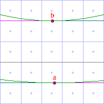

Rounding
The Round State
<move>, Xgridfit's primary point-moving element, allows you to round the distance a point is to be positioned from a reference point or the grid origin. You can also use the <round> element to round any number that represents a distance: for example, it is a good idea to round some of the most commonly used control values in the <pre-program>, and you can do this very simply:
<round value="control-value-id"/>
More often than not, you will use rounding to ensure that the point you are moving lands on a grid line. The kind of rounding needed for that task is straightforward--a matter of rounding a fixed-point number to the nearest integer. But the TrueType engine offers several kinds of rounding, which Xgridfit labels as follows:
- to-grid: Rounds to the nearest integer
- to-half-grid: Rounds to the nearest half-number (for example, 1.45 is rounded to 1.5)
- to-double-grid: Rounds to an integer or half-number, whichever is nearer
- up-to-grid: Always rounds to the higher integer (for example, 1.1 is rounded to 2.0)
- down-to-grid: Always rounds to the lower integer (for example, 1.9 is rounded to 1.0)
The kind of rounding performed is determined by the current setting of the round state. You can change the round state (or turn off rounding altogether) with the <set-round-state> or the <with-round-state> element. You can specify a round state for a single <move> element by passing one of the values listed above via the round attribute, or you can use the value "yes" to round according to the current round state.
Custom Round States
TrueType's standard round states are sufficient most of the time; but it is also possible to create custom round-states by directly controlling the three variables that control rounding:
- period: the distance between rounded positions (the default is 1.0)
- phase: where the rounded positions fall (the default is 0, meaning that they fall on integer boundaries)
- threshold: the point at which the direction of rounding changes (0.5 by default): if the number is less than this the direction of rounding is down; if equal or greater, the direction is up
The available documentation on how rounding works is far from clear, but the Apple specification offers a useful walk-through of the rounding operation. If the distance we need to round is n:
- add engine compensation to n
- subtract the phase from n
- add the threshold to n
- truncate n to the next lowest periodic value (ignore the phase)
- add the phase back to n
- if rounding caused a positive number to become negative, set n to the positive round value closest to 0
- if rounding caused a negative number to become positive, set n to the negative round value closest to 0
Let's walk through a few examples, an easy one first. When the round state is in its default value ("to-grid"), the period is one, the phase zero, and the threshold one half of the period. Suppose that n is 1.3 after "engine compensation" has been added (a complication which we need not address).
- subtract phase: 1.3 - 0 = 1.3
- add threshold: 1.3 + 0.5 = 1.8
- truncate: floor(1.8) = 1.0
- add phase: 1.0 + 0 = 1.0
Try it with n = 1.6:
- subtract phase: 1.6 - 0 = 1.6
- add threshold: 1.6 + 0.5 = 2.1
- truncate: floor(2.1) = 2.0
- add phase: 2.0 + 0 = 2.0
The round state "to-half-grid" is like "to-grid" but with a phase of one half of the period. Let's try it with n = 1.6 again:
- subtract phase: 1.6 - 0.5 = 1.1
- add threshold: 1.1 + 0.5 = 1.6
- truncate: floor(1.6) = 1.0
- add phase: 1.0 + 0.5 = 1.5
Now let us concoct a custom round state: period one, phase one quarter, threshold seven eighths (0.875), and try it with n = 1.6
- subtract phase: 1.6 - 0.25 = 1.35
- add threshold: 1.35 + 0.875 = 2.225
- truncate: floor(2.225) = 2.0
- add phase: 2.0 + 0.25 = 2.25
Notice that the low threshold has forced the engine to round upwards even though the distance from 1.6 to the next rounded point, 2.25, is more than 0.5. Finally, since the threshold can be negative, let's look at the effect of a negative threshold. Now our custom round state is period one, phase 0, threshold minus one eighth (-0.125); and n = 1.1:
- subtract phase: 1.1 - 0 = 1.1
- add threshold: 1.1 - 0.125 = 0.975
- truncate: floor(0.975) = 0.0
- add phase: 0.0 + 0 = 0.0
So a negative threshold can force a number to round to the rounding-point below the next lowest rounding-point (though it need not do so--and would not with n = 1.6).
A custom round state is defined with the <round-state> element, which can only come in the top of the Xgridfit file, as a child of <xgridfit>. Then one can set the round state to this value simply by passing its name to any element that takes a round attribute.
Rounded Numbers and Distance on the Grid
A number with no fractional part always represents a distance equal to a multiple of the width or height of one pixel. A point that is positioned a rounded distance from the grid origin at 0,0 must always fall on one of the grid lines that runs between pixels: this is because 0,0 itself is always positioned on such a grid line. Thus this sequence:
<with-vectors axis="y">
<move distance="lc-x-height">
<point num="top"/>
</move>
</with-vectors>
will place point "top" on a grid line if the round state is "to-grid" (the default), for the <move> element uses rounding by default.
However, rounding "to-grid" with the <move> element does not guarantee that the point moved lands on a grid line: that happens only if you plan properly. For example, the following code
<with-vectors axis="y">
<move distance="lc-rnd-horz-stem">
<reference>
<point num="a"/>
</reference>
<point num="b"/>
</move>
</with-vectors>
positions point b a rounded distance from point a. If point a has not yet been rounded to the grid, you get the undesirable result on the left. If point a has already been rounded, you get the much better result on the right.

|
 |
And when the projection vector is not set to the x or the y axis, rounding generally will not position points on grid lines. Indeed, it is usually best to turn rounding off when instructing diagonal stems.
Instructions Relating to Rounding
These also include the <round> and <no-round> elements, described in the chapter on arithmetic. You should also be aware of the round operator, used in expressions.
<round-state>
Declares a custom round state whose name can be passed to <set-round-state>, <with-round-state>, or any element that takes a round attribute. For an explanation of the period, phase and threshold attribute, see above. Note that only a limited number of values is permitted for each of these attributes. This element is permitted only in top level of the program, as a child of <xgridfit>.
<set-round-state>
<with-round-state>
Sets the round state. If the round attribute matches the name of a <round-state> element, that round state is used. If not, one of TrueType's prefabricated round states may be used:
- to-grid
- to-half-grid
- to-double-grid
- up-to-grid
- down-to-grid
If the round attribute is not one of these, and not one of the custom round-states, Xgridfit tries to resolve it as a number, constant, variable or function parameter and use that as an argument to SROUND. You had better know what you're doing if you intend to use a raw number in this way; it is safer, more intelligible and just as effective to supply a custom <round-state> element.
The distinction between the element beginning with "set" and the one beginning with "with" is the same as it is for the vector-setting elements: briefly, the round state set by the "set" element affects the instructions that follow it; the round state set by the "with" instruction affects only the instructions that it contains.
Xgridfit generates instructions that keep track of the round state (since the TrueType engine provides no way to read it), but it may lose track if Xgridfit instructions are not used exclusively.